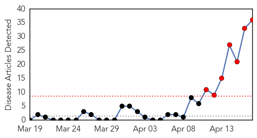
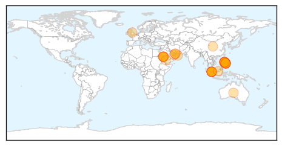
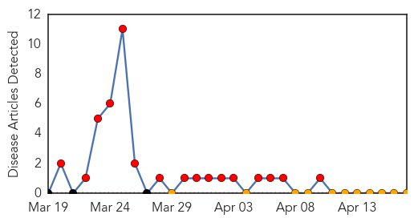
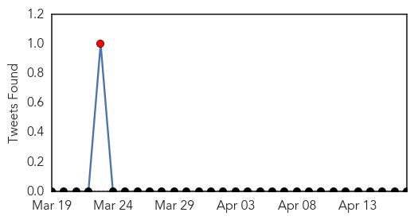

MERS
30-Day Web Trend
7 alerts, 0 warnings

30-Day Twitter Trend
2 alerts, 0 warnings

Article Locations
Article Confidences

Top Articles:
- 1.000
- Spate of Mideast virus infections raises concerns
- 1.000
- UAE Reports 10 New Cases Of Human Infection With MERS Coronavirus
- 1.000
- Spate of Mideast virus infections raises concerns
- 1.000
- Spate of infections from frequently deadly Middle East virus raises concerns
- 1.000
- New infections in Gulf raise concerns about efforts to contain MERS virus
- 1.000
- MERS Coronavirus Is on a Serious Rampage
- 0.999
- Middle East respiratory syndrome coronavirus (MERS-CoV) – update
- 0.999
- Malaysia Reports First Case Of Human Infection With MERS Coronavirus
- 0.999
- Gulf Daily News World News New virus alert over Middle East outbreak
- 0.999
- MERS-camel link confirmed
- 0.999
- UAE Confirms Three New MERS Cases
- 0.998
- Malaysia reports first Asian death from MERS virus
- 0.998
- Malaysia reports first Asian death from MERS virus
- 0.998
- Malaysia reports 1st death from MERS virus in Asia - National
- 0.997
- DOH asks co-passengers of OFW carrier to test for MERS-CoV
- 0.997
- PH asks airline passengers to check for MERS
- 0.996
- MERS outbreaks grow; Malaysian case had camel link
- 0.995
- WHO experts to probe Saudi MERS outbreakHealthcare
- 0.993
- ‘Avoid close contact with infected’Healthcare
- 0.993
- Malaysian man dies from MERS virus
- 0.993
- Malaysia quarantines 64 villagers over MERS virus
- 0.992
- Fellow passengers of MERS-positive OFW urged to check with DOH
- 0.992
- DH closely monitors two cases of Middle East Respiratory Syndrome in Malaysia and the Philippines
- 0.989
- DOH tracking down 418 Etihad passengers for MERS
- 0.984
- Strict MERS-CoV check for passengers from Middle East
- 0.983
- Residents call for increased Mers awarenessHealthcare
- 0.977
- Embassy issues advisory to Filipinos on coronavirus
- 0.976
- Rule out possible MERS-CoV infection, OFWs urged
- 0.975
- SMS campaign fights MERS
- 0.954
- MERS virus: 64 villagers from Kampung Bintang quarantined for a week - Nation
- 0.922
- PNoy meets with health officials to tackle entry of MERS virus
- 0.920
- Fifiteen in contact with MERS-CoV quarantined
- 0.911
- Singapore puts country's hospitals on alert for MERS-CoVc virus
- 0.901
- Singapore puts country's hospitals on alert for MERS-CoVc virus
- 0.901
- Singapore puts country's hospitals on alert for MERS-CoVc virus
- 0.880
- Rapid spread of Coronavirus and rising death toll alarms health experts
Top Tweets:
-
No tweets found for Apr 17, 2014
Hemmorhagic Fever
30-Day Web Trend
16 alerts, 0 warnings

30-Day Twitter Trend
1 alerts, 0 warnings

Article Locations

Article Confidences

Top Articles:
-
No articles found for Apr 17, 2014
Top Tweets:
-
No tweets found for Apr 17, 2014